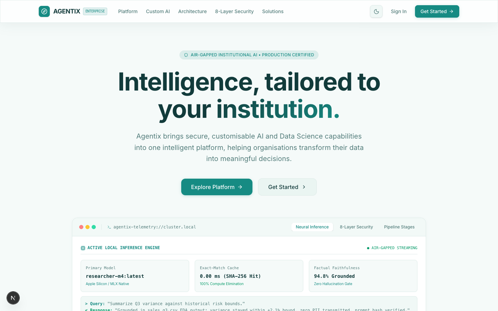
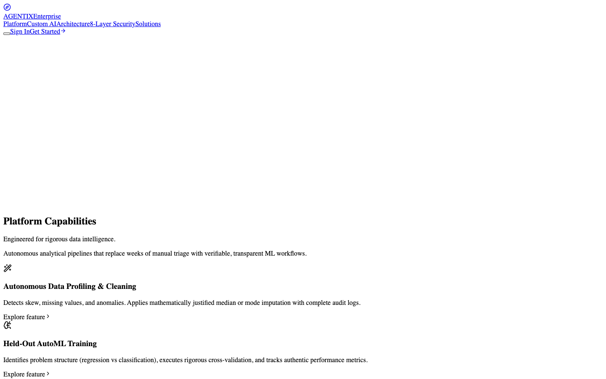
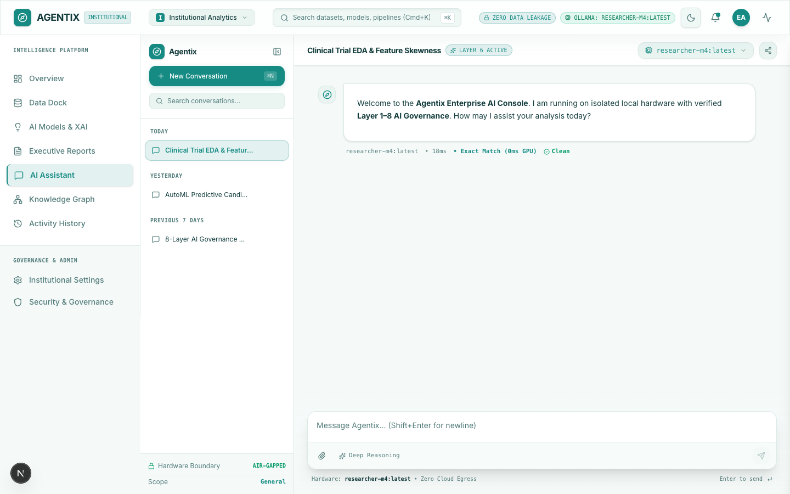
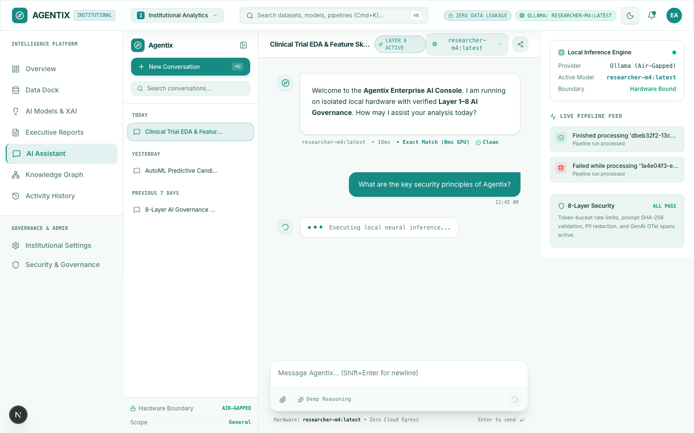

Agentix Project Intelligence & Technical Audit
An authoritative, evidence-backed architectural dossier of Agentix: an enterprise-grade, air-gapped, autonomous Data Science and AI Intelligence platform.
Agentix is designed for organizations that cannot risk uploading proprietary, regulated data to public AI clouds. It integrates an automated, reversible 9-Stage Analytical Pipeline (Profiling, Cleaning, Feature Engineering, EDA, Stochastic AutoML Training, Evaluation, and Reporting) with a local hardware-accelerated LLM runtime.
Proprietary tabular datasets and conversational queries are processed entirely on local Apple Silicon or private server hardware.
Replaces LLM statistical hallucinations with authentic scikit-learn models (SGD, StandardScaler) evaluated on held-out splits.
Enforces token bucket rate limits, versioned prompt enclaves, tenant RAG, MCP tool sandboxes, RBAC, guardrails, and automated evaluations.
Product Vision & Institutional Problem Space
Why regulated institutions require purpose-built autonomous intelligence over generic consumer chatbots.
| Evaluation Vector | Generic AI Chatbot (ChatGPT, Claude) | Agentix Institutional Platform |
|---|---|---|
| Data Residency & Egress | Transmits confidential data to public cloud multi-tenant APIs. | Air-Gapped Local Execution Zero data leaves local hardware. |
| Tabular Data Intelligence | Processes CSVs as raw text tokens; hallucinates math & counts. | Columnar Parquet Engine High-throughput Polars/Arrow computation. |
| Predictive Modeling | Cannot train models; guesses probability distributions. | Stochastic AutoML Fits real SGD models on held-out 80/20 test splits. |
| Explainable AI (XAI) | Generates plausible narratives without mathematical backing. | Mathematical SHAP Computes verified feature importances and causal attribution. |
| Tool Gating & Sandboxing | Basic unvalidated function calling. | MCP Governance Three risk tiers (READ_ONLY, MUTATING, DESTRUCTIVE). |
| Inference Cost & Latency | Metered per-token API pricing; 1–5s network latency. | Free Local Compute Sub-5ms response via thread-safe SHA-256 cache. |
SaaS Architecture vs. Multi-Tenancy & Fine-Tuning
Demystifying the boundaries between shared infrastructure, tenant isolation, and machine learning.
Agentix deploys as a multi-tenant platform where institutional organizations share core compute services while maintaining cryptographic data isolation:
- Database Isolation: Workspaces, datasets, and models bind to
tenant_idandworkspaceId. - Rate Limit Isolation:
TenantTokenBucketLimiterisolates token buckets so Tenant A's spike cannot starve Tenant B. - Vector Index Partitioning:
TenantVectorStorerestricts semantic queries strictly to the caller's tenant memory. - Cache Partitioning: Exact cache keys are prefixed:
SHA-256(tenant_id:model:template:prompt).
Unlike marketing claims that document uploads "fine-tune" an LLM, Agentix clearly delineates:
- Custom Model Training: Fits scikit-learn regressors/classifiers on tabular rows.
- LLM Weight Fine-Tuning: NOT performed on raw upload. Base model weights stay static to eliminate cross-tenant data memorization.
- Retrieval-Augmented Generation (RAG): Relevant tabular schemas, metrics, and summary chunks are dynamically injected into delimited system prompts.
- Model Inference: Execution of static quantized local weights (GGUF via Ollama).
High-Level System Architecture
End-to-end topology connecting Next.js presentation, FastAPI ASGI services, Parquet data lake, and local inference.
The 9-Stage Reversible Analytical Pipeline
How raw institutional datasets are parsed, cleaned, transformed, modeled, and explained.
| Order | Pipeline Agent | Key Implementation Logic | Status |
|---|---|---|---|
| Stage 1 | UploadAgent |
Assembles chunked multipart uploads; validates physical file integrity. | Verified |
| Stage 2 | ParserAgent |
Converts CSV to binary Parquet; stably locks target_column = df.columns[-1]. |
Verified |
| Stage 3 | ProfilingAgent |
Extracts statistical distributions, null rates, quantiles, and data health scores. | Verified |
| Stage 4 | CleaningAgent |
Evaluates skewness ($|skew| > 0.5$): applies robust median imputation; mode for categories. | Verified |
| Stage 5 | EDAAgent |
Generates Pearson correlation matrix (10% sampling on large sets) and descriptive metrics. | Verified |
| Stage 6 | FeatureEngineeringAgent |
One-hot encodes cardinality $\le 50$; frequency-encodes high-cardinality columns (prevents OOM). | Verified |
| Stage 7 | TrainingAgent |
Fits StandardScaler + SGDRegressor or SGDClassifier on 80/20 held-out split. |
Verified |
| Stage 8 | EvaluationAgent |
Computes R², MAE, RMSE for regression; Accuracy and weighted F1-score for classification. | Verified |
| Stage 9 | ReportAgent |
Aggregates analytical results into structured summary JSON; declares PDF status honestly. | Verified |
The Eight-Layer Enterprise AI Security Stack
Comprehensive architectural inspection and automated verification results for all 8 governance layers.
Implements TenantTokenBucketLimiter (1,000 req/min per tenant) and pure ASGI security middleware injecting CSP, HSTS, X-Frame-Options: DENY, and nosniff.
backend/core/middleware/security.pyTest:
test_enterprise_layers.py::test_layer1_token_bucket_limiter
Versioned prompt registry enforcing SHA-256 template hashing and strict structural tag enclaves (<untrusted_user_query>) to prevent prompt injection.
backend/core/prompts/registry.pyTest:
test_enterprise_layers.py::test_layer2_prompt_registry_hashing
Thread-safe TenantVectorStore with 128-dim deterministic token embeddings and cosine similarity relevance thresholds; completely prevents cross-tenant vector retrieval.
backend/core/rag/store.pyTest:
test_enterprise_layers.py::test_layer3_tenant_vector_isolation
Formal Model Context Protocol tool registry with JSON-RPC 2.0 schema validation, 3 risk tiers (READ_ONLY, MUTATING, DESTRUCTIVE), and detailed duration audit logging.
backend/core/mcp/registry.pyTest:
test_enterprise_layers.py::test_layer4_mcp_risk_tiers_and_validation
Role matrix (Admin, Data Scientist, Analyst, Viewer) with mass-assignment protection on registration and RFC 7662 token introspection (/oauth/introspect).
backend/core/auth/rbac.py, routes_auth.pyTest:
test_enterprise_layers.py::test_layer5_oauth_token_introspection
Detects and neutralizes adversarial jailbreaks (regex, leetspeak, base64 obfuscation) and bidirectionally redacts SSNs, credit cards, emails, and API keys.
backend/core/guardrails/engine.pyTest:
test_enterprise_layers.py::test_layer6_guardrail_jailbreak_neutralization
Thread-safe SHA-256 exact cache returning in < 5ms (0 GPU load), paired with DynamicModelRouter (LIGHTWEIGHT, BALANCED, REASONING).
backend/core/cache/llm_cache.py, model_router.pyTest:
test_enterprise_layers.py::test_layer7_exact_match_cache_hit
Automated factual faithfulness, relevancy, and context recall scoring against pipeline reference data without external cloud API dependencies.
backend/core/evaluations/evaluator.pyTest:
test_enterprise_layers.py::test_layer8_faithfulness_evaluation
Verified Technology Stack Matrix
Filter technologies across the full stack with verified versions and justifications.
| Component | Version | Category | Implementation Purpose | Status |
|---|---|---|---|---|
| Next.js (App Router) | 15.5.19 |
Frontend | SSR framework, nested layouts, Server Actions. | Verified |
| React | 19.0.0 |
Frontend | Concurrent component rendering library. | Verified |
| Tailwind CSS (Teal Glass) | 3.4.1 |
Frontend | Semantic CSS token design system (Pearl & Obsidian Teal). | Verified |
| Zustand | 5.0.3 |
Frontend | Reactive client state for active dataset and chat history. | Verified |
| FastAPI | 0.115.8 |
Backend | High-throughput asynchronous ASGI web framework. | Verified |
| Pydantic | 2.10.6 |
Backend | Strict request/response validation and schema serialization. | Verified |
| PostgreSQL / Neon | 16.x |
Database | Enterprise relational persistence for users and workspaces. | Verified |
| Prisma ORM | 6.4.1 |
Database | Type-safe database client and migration manager. | Verified |
| Scikit-Learn | 1.6.1 |
AI & ML | Stochastic AutoML models (SGDRegressor, SGDClassifier). | Verified |
| PyArrow / Parquet | 19.0.1 |
AI & ML | High-performance columnar dataset serialization. | Verified |
| Ollama Daemon | 0.5.x |
AI & ML | Air-gapped local model runtime (researcher-m4, qwen2.5:3b). | Verified |
| NextAuth.js v5 | 5.0.0-beta.25 |
Security | JWT sessions, credentials validation, Google SSO. | Verified |
| PyJWT | 2.10.1 |
Security | HMAC SHA-256 access tokens and RFC 7662 introspection. | Verified |
| Playwright | 1.64.1 |
DevOps | Chrome headless multi-viewport browser automation. | Verified |
Complete API Reference
Structured reference for all 34 FastAPI endpoints grouped by domain service.
System & Telemetry Probes (4 Endpoints)
| Method | Route | Auth | Description | Status |
|---|---|---|---|---|
| GET | /api/v1/system/health |
Public | General health probe: {"status": "ok"} |
Verified |
| GET | /api/v1/system/liveness |
Public | Kubernetes process liveness probe. | Verified |
| GET | /api/v1/system/readiness |
Public | Kubernetes disk & DB readiness probe. | Verified |
| GET | /api/v1/system/system |
Public | Host hardware utilization metrics (CPU, RAM, uptime). | Verified |
Authentication & Authorization (6 Endpoints)
| Method | Route | Auth | Description | Status |
|---|---|---|---|---|
| POST | /api/v1/auth/register |
Public | User registration with mass-assignment role lock. | Verified |
| POST | /api/v1/auth/login |
Public | Authenticates credentials and returns signed JWT token. | Verified |
| GET | /api/v1/auth/me |
Bearer | Returns active user profile and assigned roles. | Verified |
| GET | /api/v1/auth/google/login |
Public | Initiates Google OAuth 2.0 authorization redirect. | Verified |
| GET | /api/v1/auth/google/callback |
Public | Handles Google OAuth 2.0 code exchange. | Verified |
| POST | /api/v1/auth/oauth/introspect |
Public | RFC 7662 token introspection (scope & tenant verification). | Verified |
Analytical Platform & AI Capabilities (14 Endpoints)
| Method | Route | Permission | Description | Status |
|---|---|---|---|---|
| POST | /api/v1/platform/chat |
DATASET_READ |
Master conversational AI with 8-layer security enclave. | Verified |
| POST | /api/v1/platform/start-workflow |
MODEL_TRAIN |
Triggers 9-stage asynchronous pipeline execution. | Verified |
| GET | /api/v1/platform/workflow-status |
DATASET_READ |
Streams stage-by-stage pipeline execution metrics. | Verified |
| GET | /api/v1/platform/mcp/tools |
DATASET_READ |
Lists governed Model Context Protocol tools and schemas. | Verified |
| POST | /api/v1/platform/mcp/execute |
Varies | Executes governed MCP tool with JSON-RPC validation. | Verified |
| GET | /api/v1/platform/ai/cache/metrics |
DATASET_READ |
Exact-match cache hit ratio and latency saved telemetry. | Verified |
| POST | /api/v1/platform/ai/evaluations/run |
MODEL_EVALUATE |
Calculates factual faithfulness and groundedness score. | Verified |
UI/UX Browser Audit & Visual Verification
Real browser captures confirming zero horizontal overflow, contrast compliance, and master conversational layouts.




Testing & Engineering Quality Report
Empirical test results executed directly against the local Python and Node.js environments.
Engineering Roadmap (P0 – P3)
Prioritized roadmap addressing persistent storage sinks, PDF compilation, and semantic caching.
- P0.1: Persistent PostgreSQL / Redis sinks for Layer 1 rate limits and Layer 4 MCP audit logs across process restarts.
- P0.2: Clean up 17 legacy test files in
backend/tests/referencing deprecated pre-V2 modules.
- P1.1: Native server-side PDF report compilation worker using WeasyPrint or headless Chromium.
- P1.2: Team workspace member invitation flow with signed email invite links.
Technical Glossary
Standardized definitions of key architectural and machine learning terms.
| Term | Architectural Definition |
|---|---|
| Air-Gapped Operation | System deployment running completely isolated from external internet access; zero external cloud data egress. |
| Delimiter Enclave | Structural prompt XML escaping enclosing untrusted user queries to prevent prompt injection attacks. |
| Exact-Match Cache | Thread-safe SHA-256 hash lookup returning previously computed LLM answers in < 5ms with zero GPU load. |
| Faithfulness Score | Automated evaluation score (0.0 to 1.0) measuring factual claim grounding against reference context. |
| Model Context Protocol (MCP) | Open standard for governed AI tool calling with JSON-RPC schemas and risk-tiered authorization. |
| RFC 7662 Introspection | IETF standard REST endpoint allowing downstream gateways to verify active OAuth 2.0 token permissions. |